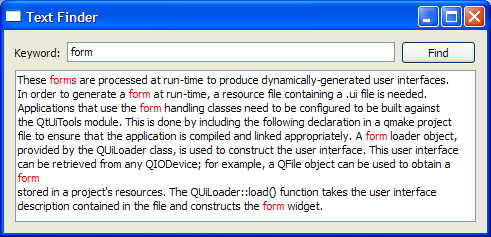
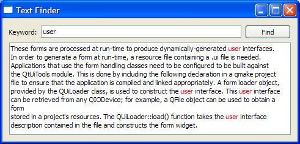
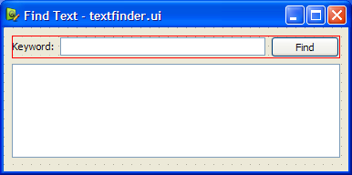

Text Finder Example
Dynamically loading .ui files using QUiLoader.
The TextFinder example shows how to load and setup a .ui file dynamically using the QUiLoader class that is part of the Qt UI Tools library.
The program allows the user to look up a particular word within the contents of a text. The visual elements and layout of the user interface is loaded at runtime, from a the program resources.
 |  |
Setting Up The Resource File
The resources required for the example are:
textfinder.ui- the user interface file created in Qt Designerinput.txt- a text file containing some text to be displayed in a QTextEdit
textfinder.ui contains all the necessary QWidget objects for the Text Finder. A QLineEdit is used for the user input, a QTextEdit is used to display the contents of input.txt, a QLabel is used to display the text "Keyword", and a QPushButton is used for the Find button. Note that all the widgets have sensible objectName's assigned. These are used in code to identify them.
The screenshot below shows the preview obtained in Qt Designer.

In this example, we store both resources in the applicaton's executable by including the textfinder.qrc file. Alternatively, the files could also be loaded at runtime from the file system, or from an external binary resource .rcc file. For more information on resource files, see The Qt Resource System.
The textfinder.qrc file lists all files that should be included as a resource:
<!DOCTYPE RCC><RCC version="1.0">
<qresource>
<file>forms/textfinder.ui</file>
<file>forms/input.txt</file>
</qresource>
</RCC>
To generate a form at run-time, the example is linked against the Qt Ui Tools library. This is done in the textfinder.pro file:
QT += widgets uitools HEADERS = textfinder.h SOURCES = textfinder.cpp main.cpp RESOURCES = textfinder.qrc
TextFinder Class Definition
The TextFinder class contains the main user interface. It declares pointers to the QPushButton, QTextEdit and QLineEdit elements described above. The QLabel in the user interface is not declared here as we do not need to access it from code.
class TextFinder : public QWidget { Q_OBJECT public: explicit TextFinder(QWidget *parent = nullptr); private slots: void on_findButton_clicked(); private: QPushButton *ui_findButton; QTextEdit *ui_textEdit; QLineEdit *ui_lineEdit; };
The slot on_findButton_clicked() is a slot named according to the Automatic Connection naming convention required by uic.
Loading the Resources
We use QFile to load the data from the program resources at runtime. The code for this is in two method methods on top of textfinder.cpp: loadUiFile and loadTextFile.
The loadUiFile function loads the user interface file previously created in Qt Designer. First, the content of the textfinder.ui file is loaded from the resource system. Then a QUiLoader instance is created, and the QUiLoader::load() function is called, with the first argument being the open file, and the second argument being the pointer of the widget that should be set as the parent. The created QWidget is returned.
static QWidget *loadUiFile(QWidget *parent) { QFile file(":/forms/textfinder.ui"); file.open(QIODevice::ReadOnly); QUiLoader loader; return loader.load(&file, parent); }
In a similar vein, the loadTextFile function loads input.txt from the resources. Data is read using QTextStream into a QString with the QTextStream::readAll() function. We explicitly set the encoding to UTF-8, because QTextStream by default uses the current system locale. Finally, the loaded text is returned.
static QString loadTextFile() { QFile inputFile(":/forms/input.txt"); inputFile.open(QIODevice::ReadOnly); QTextStream in(&inputFile); in.setCodec("UTF-8"); return in.readAll(); }
TextFinder Class Implementation
The TextFinder class's constructor does not instantiate any child widgets directly. Instead, it calls the loadUiFile() function, and then uses QObject::findChild() to locate the created QWidgets by object name.
TextFinder::TextFinder(QWidget *parent) : QWidget(parent) { QWidget *formWidget = loadUiFile(this); ui_findButton = findChild<QPushButton*>("findButton"); ui_textEdit = findChild<QTextEdit*>("textEdit"); ui_lineEdit = findChild<QLineEdit*>("lineEdit");
We then use QMetaObject::connectSlotsByName() to enable the automatic calling of the on_findButton_clicked() slot.
QMetaObject::connectSlotsByName(this);
The loadTextFile function is called to get the text to be shown in the QTextEdit.
ui_textEdit->setText(loadTextFile());
The dynamically loaded user interface in formWidget is now properly set up. We now embed formWidget through a QVBoxLayout.
QVBoxLayout *layout = new QVBoxLayout;
layout->addWidget(formWidget);
setLayout(layout);
At the end of the constructor we set a window title.
setWindowTitle(tr("Text Finder"));
}
The on_findButton_clicked() function is a slot that is connected to ui_findButton's clicked() signal. The searchString is extracted from the ui_lineEdit and the document is extracted from ui_textEdit. If there is an empty searchString, a QMessageBox is used, requesting the user to enter a word. Otherwise, we traverse through the words in ui_textEdit, and highlight all ocurrences of the searchString. Two QTextCursor objects are used: One to traverse through the words in line and another to keep track of the edit blocks.
void TextFinder::on_findButton_clicked() { QString searchString = ui_lineEdit->text(); QTextDocument *document = ui_textEdit->document(); bool found = false; // undo previous change (if any) document->undo(); if (searchString.isEmpty()) { QMessageBox::information(this, tr("Empty Search Field"), tr("The search field is empty. " "Please enter a word and click Find.")); } else { QTextCursor highlightCursor(document); QTextCursor cursor(document); cursor.beginEditBlock(); QTextCharFormat plainFormat(highlightCursor.charFormat()); QTextCharFormat colorFormat = plainFormat; colorFormat.setForeground(Qt::red); while (!highlightCursor.isNull() && !highlightCursor.atEnd()) { highlightCursor = document->find(searchString, highlightCursor, QTextDocument::FindWholeWords); if (!highlightCursor.isNull()) { found = true; highlightCursor.movePosition(QTextCursor::WordRight, QTextCursor::KeepAnchor); highlightCursor.mergeCharFormat(colorFormat); } } cursor.endEditBlock();
The found flag is used to indicate if the searchString was found within the contents of ui_textEdit. If it was not found, a QMessageBox is used to inform the user.
if (found == false) {
QMessageBox::information(this, tr("Word Not Found"),
tr("Sorry, the word cannot be found."));
}
}
}
main() Function
The main() function instantiates and shows TextFinder.
int main(int argc, char *argv[]) { QApplication app(argc, argv); TextFinder textFinder; textFinder.show(); return app.exec(); }
There are various approaches to include forms into applications. Using QUILoader is just one of them. See Using a Designer UI File in Your Application for more information on the other approaches available.
See also Calculator Builder Example and World Time Clock Builder Example.